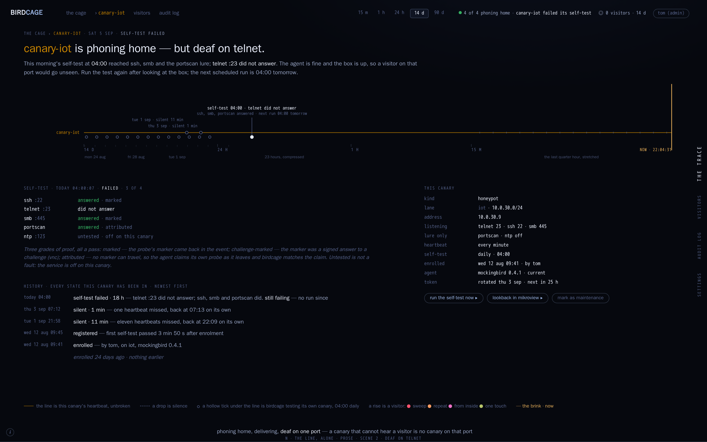
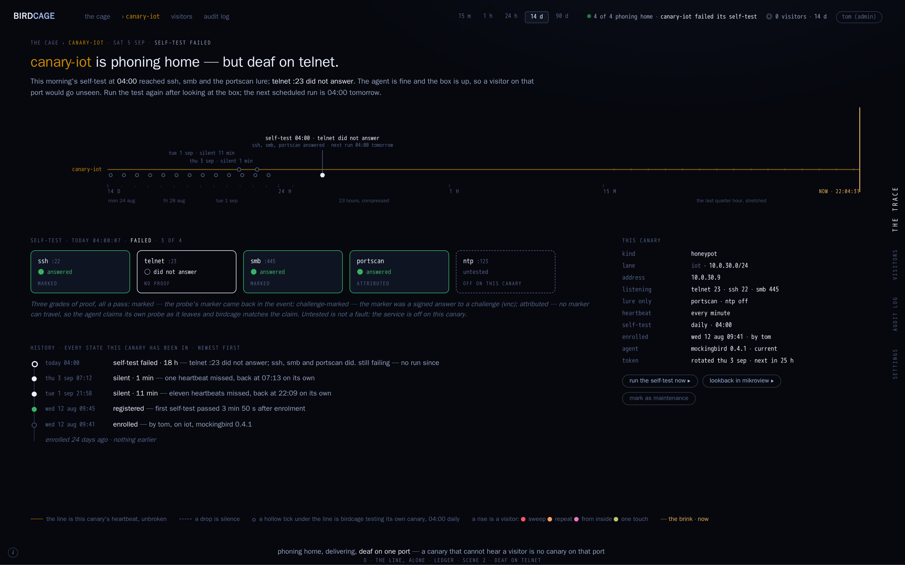

The first surface after the ratified shell (ADR-0004): one canary's own page. The band line alone at its own scale, a status sentence and its actions, the self-test per service, every state newest first, and the facts. The shell is not restyled. Two new marks, both in ink: a hollow tick under the line is birdcage testing its own canary at 04:00; a filled tick with words above the line is a run that failed.
The two directions share the top half and differ only in how the lower half is set. Each page is one URL that scrolls through four scenes: quiet, and answers when tested (5 Sep), deaf on telnet (self-test failed), silent, third time this week, the sweep night, from this canary (12 Sep).
Verdict 2026-09-23: the ledger (O) is the ratified canary page — "22 O". N dropped. Recorded as an extension of ADR-0004.
The self-test is a short list, one line per service. The history is prose, one sentence per state.

direction-n-line-alone-prose.html ▸ scene 1 · quiet, and answers when tested scene 2 · deaf on telnet scene 3 · silent, third time this week scene 4 · the sweep night, from this canaryThe self-test is a strip of cards, one per service, outlined in the grade's colour. The history is a thread with a dot per state, the band's own dots.

direction-o-line-alone-ledger.html ▸ scene 1 · quiet, and answers when tested scene 2 · deaf on telnet scene 3 · silent, third time this week scene 4 · the sweep night, from this canary